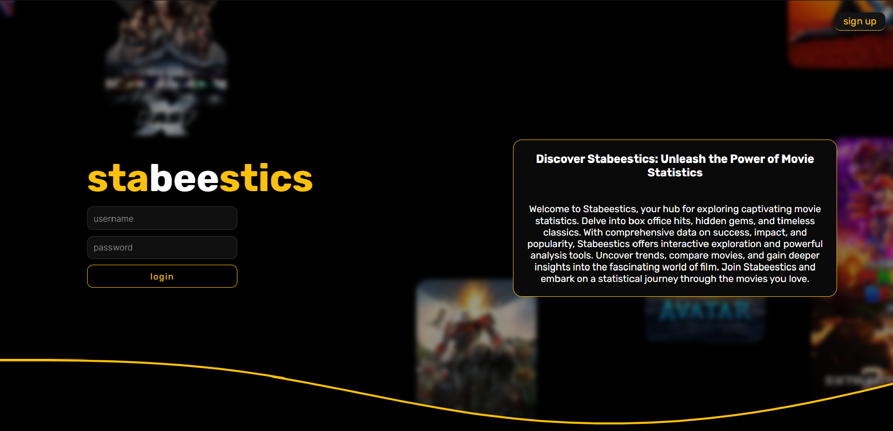
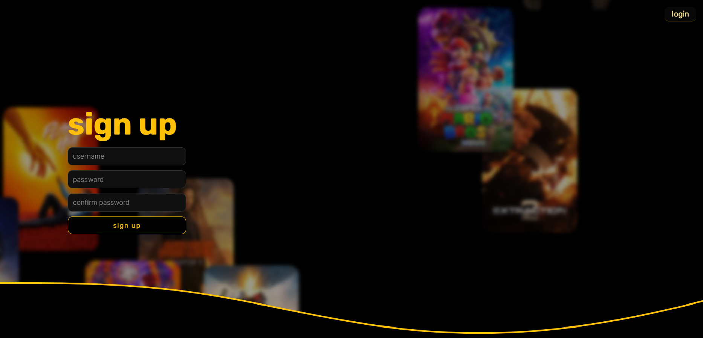
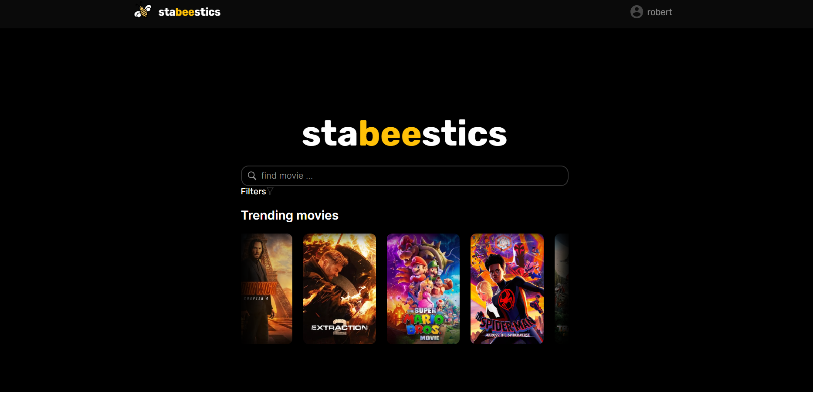
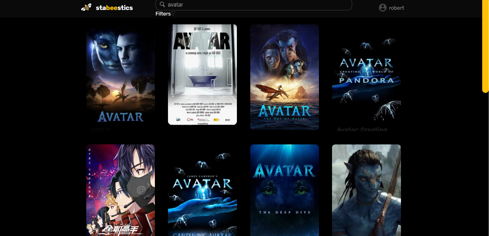
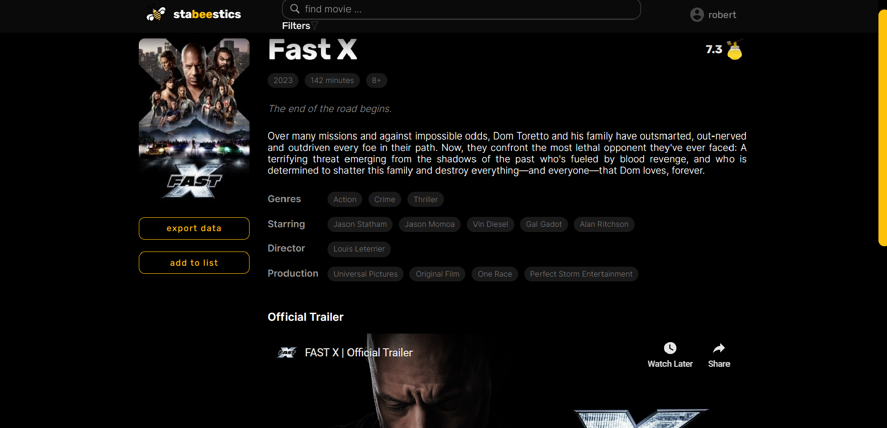
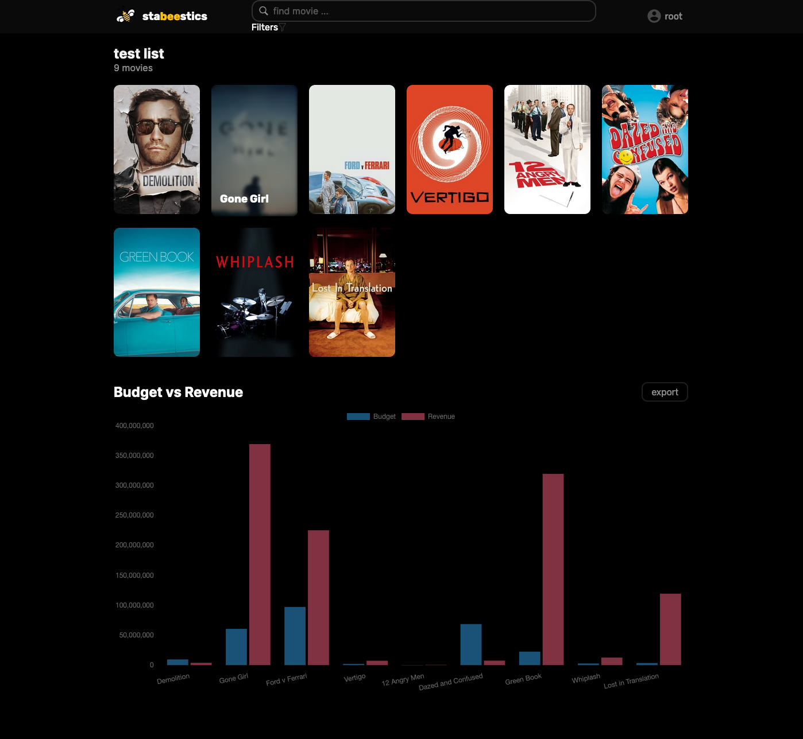
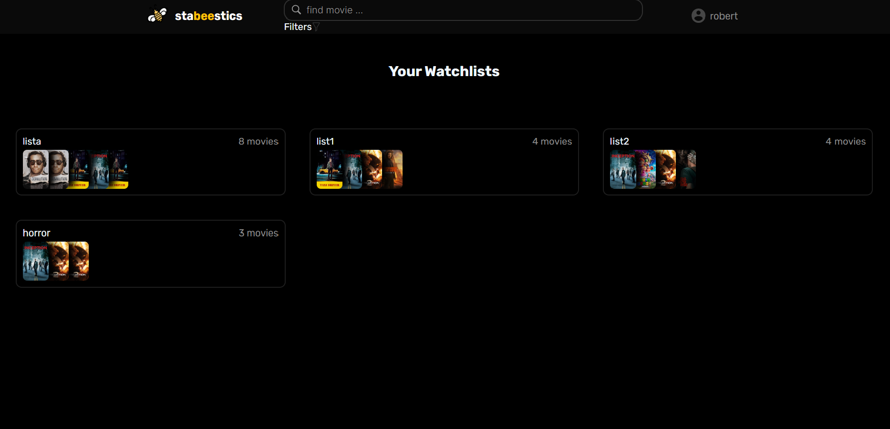
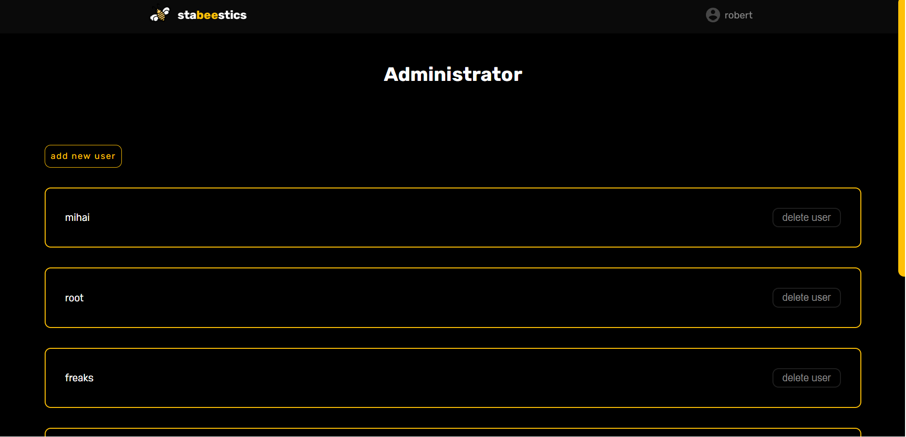
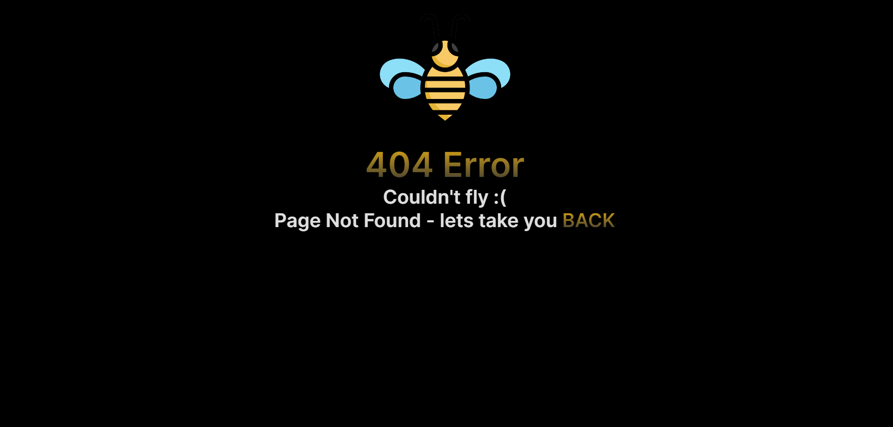

2. Introducere
2.1 Scopul documentului
Scopul acestui document este de a oferi o descriere detaliata a interfetei si a functionalitatii puse la dispozitie in aplicatia web numita Stabeestics, bazata pe cerintele proiectului MoX (Movies and TV Shows Explorer).
2.2 Conventiile documentului
Documentatia a fost creata utilizand informatiile din modelul IEEE System Requirement Specification Documents, cu ajutorul ScholarlyHTML.
2.3 Audienta tinta si sugestii
Orice persoana(persoane obisnuite, pasionatii de filme) care doreste sa exploreze și sa descopere informatii despre filme poate fi o audienta potentiala pentru un astfel de site.
2.4 Scopul Produsului
Stabeestics este o aplicatie web care permite utilizatorilor sa caute si sa exploreze filme si emisiuni TV dupa diferite categorii, cum ar fi gen, popularitate, rating etc. In plus, utilizatorii pot folosi cuvinte cheie in cautarea filmului dorit. Pe pagina filmului, utilizatorul poate vedea informatiile filmului, trailerul acestuia si alte filme similare. Pe langa aceasta, poate exporta datele filmului intr-un fisier CSV sau il poate adauga intr-un watchlist in care mai apoi va putea vedea statistici bazate pe filmele alese.
2.5 Referinte
3. Descriere generala
3.1 Descrierea produsului
Stabeestics este o aplicatie web care preia statistici despre filme si emisiuni TV de la diferite servicii de streaming. Utilizatorii pot cauta si filtra cautarile pentru a gasi informatia dorita în functie de preferinte. Aplicatia poate fi accesata de pe mai multe platforme, cum ar fi desktop, tableta sau smartphone, asigurand astfel o experienta coerenta utilizatorilor pe orice dispozitiv. Aplicatia permite utilizatorului sa creeze liste in care sa puna filmele dorite, iar mai apoi sa vizualizeze statistici pe baza filmelor adaugate in lista.
3.2 Functionalitatile produsului
Aplicatia permite utilizatorilor website-ului sa caute filme sau emisiuni TV, sa vizualize diferite informatii si statistici despre acestea sau sa se inregistreze/logheze. Pentru a putea folosi aplicatia utilizatorii trebuie s fie inregistrati. Statisticile generate vor fi exportate in formatele CSV, WebP si SVG. Alte functionalitati: informatiile filmelor pot fi exportate in format CSV, utilizatorul poate crea liste in care poate adauga filme, mai apoi generand statisticile accestora, administratorul poate adauga noi utilizatori, sau poate sterge utilizatori.
Landing Page/Login Page
- Log in form: formular pentru autentificarea utilizatorilor, care mai apoi vor fi redirectionati catre pagina de cautare.
- Buton care redirectioneaza utilizatorul catre sign up page, in cazul in care acesta nu are deja un cont.
Sign up page
- Create account: utilizatorul isi creeaza un cont nou folosind datele personale, fiind redirectionat catre pagina de cautare.
- Buton care redirectioneaza utilizatorul catre login page, in cazul in care acesta are deja un cont.
Search page
- Search movies: utilizatorul va introduce in bara de cautare filmul pe care intentioneaza sa il vizualizeze. Acesta poate filtra cautarea dupa gen, popularitate, rating, si altele. La final, va fi redirectionat catre results page.
- Trending movies: utilizatorul poate selecta un film din caruselul de filme care sunt in tendinte la momentul de fata, fiind redirectionat pe pagina filmului.
- Utilizatorul poate accesa profilul acestuia, une poate vizualiza listele create.
Results page
- Search results: utilizatorul va beneficia de rezultatele cautarii in functie de filtrele alese, fiindu-i puse la dispozitie numeroase filme.
- Utilizatorul poate accesa profilul acestuia, une poate vizualiza listele create.
- De asemenea, utilizatorul poate face o alta cautare sau sa acceseze din nou search page-ul.
Movie page
- Movie details: utilizatorul va putea vizualiza detalii despre filmul dorit.
- Trailer: utilizatorul va putea vizualiza trailerul filmului.
- Related movies: utilizatorul va primi sugestii de filme bazate pe genul celui cautat.
- Utilizatorul poate descarca un fisier de tip CSV cu informatiile filmului.
- Utilizatorul poate adauga filmul in lista dorita, in caz ca doreste sa vada statisticile acestuia, plus a altor filme.
Statistics(List) page
- Utilizatorul va putea vedea statistici legate de popularitatea, bugetul, castigurile, ratingul filmelor din lista accesata, dar si alte statistici.
Profile page
- Utilizatorul poate vedea lsitele acestuia, le poate manipula sau le poate accesa.
- De asemenea, acesta poate cauta un film folosind navigation bar-ul aflat in aproape toate paginile.
Admin page
- Administratorul poate vizualiza toti utilizatorii ce au cont creat, poate crea noi conturi de utilizator sau poate sterge conturile unor utilizatori.
Error page
- Error: utilizatorul este informat ca pagina cautata nu exista.
3.3 Categorii de utilizatori
Utilizator: persoane care au un cont creat ce poate accesa toate serviciile oferite de aplicatia web.
3.4 Mediu de operare
Stabeestics este o aplicatie web, ceea ce inseamna ca fiecare utiliztor o poate accesa de pe orice browser, indiferent de sistemul de operare al device-ului utilizat.
3.5 Design si constrangeri de implementare
Pentru implementare s-a apelat la tehnologii precum HTML, CSS, JavaScript si NodeJS, iar pentru baza de date s-a utilizat SQL.
3.6 Dependente
Aplicatia este depedenta de datele furnizate de Disney+, Netflix si TMDB.
4. Cerinte externe
4.1 Interfata utilizator
Landing page
Sign up page
Search page
Results page
Movie page
Statistics page
Profile page
Admin page
Error page
4.2 Interfata software
Pentru a putea accesa aplicatia web, utilizatorii trebuie sa aiba o conexiune stabila la internet si un browser, iar pentru functiile de inregistrare si conectare aplicatia este conectata la o baza de date.
4.3 Interfata de comunicare
Comunicarea dintre clienti si server se face pe baza protocolului HTTPS.
5. Cerinte functionale
5.1 Home page
Utilizatorul are la dispozitie un formular unde se poate loga in cazul in care acesta detine un cont. In caz contrar, in coltul din dreapta-sus al paginii este un buton care il va redirectiona spre pagina de register. Inregistrarea/Logarea sunt operatii necesare pentru a accesa serviciile aplicatiei web.
5.2 Sign up page
In aceasta pagina, utilizatorul are la dispozitie un formular unde poate introduce datele pentru crearea unui nou cont. Dupa ce acesta isi face un cont, va fi redirectionat pe pagina de Search.
5.3 Login page
Daca utilizatorul detine un cont, acesta poate folosi formularul disponibil pe aceasta pagina pentru a intra in cont si a accesa serviciile aplicatiei.
5.4 Forgot password page
Aceasta pagina este destinata utilizatorului care a uitat parola contului si vrea sa o schimbe. Aceasta operatie se poate face prin introducerea adresei de email a contului pe care vrea sa il recupereze.
5.5 Search page
In aceasta pagina, utilizatorul, poate folosi bara de cautare pentru a cauta detalii despre un film/emisiune TV anume. De asemenea sub aceasta bara, acesta poate vizualiza cele mai populare filme la momentul respectiv.
5.6 Results page
Utilizator poate vizualiza rezultatele cautarii din pagina de Search. De pe aceasta pagina poate apasa pe filmul dorit pentru a vedea informatii despre acesta.
5.7 Movie page
In aceasta pagina sunt afisate detalii precum titlul, actorii, rating-ul, descrierea despre un anumit film.
5.8 Statistics page:
Utilizatorul poate vizualiza statistici precum cele mai populare filme, cele mai bine cotate filme sau cele mai noi filme. De asemenea aceste statistici pot fi descarcate si in format CSV, SVG sau WebP.
5.9 Error page:
Aceasta pagina este folosita pentru a atentiona utilizatorul ca a avut loc o eroare.
6. Cerinte nonfunctionale
6.1 Cerinte de siguranta
Aplicatia web asigura confidentialitatea si siguranta datelor ale conturilor utilizatorilor.
6.2 Cerinte de securitate
Aplicatia web foloseste tehnici de hashing pentru stocarea parolelor si au fost luate masuri de protectie impotriva atacurilor precum SQL-Injection.
6.3 Calitati software
Aplicatia prezinta cateva calitati importante precum performanta, eficienta, portabilitate, fiabilitate si securitate.